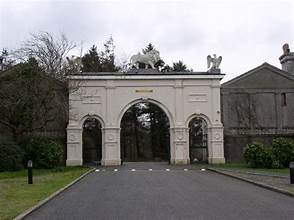

Le Pied Noir de Cilmin

Cilmin était un paysan ordinaire qui aimait chasser et pêcher beaucoup plus que les travaux de la ferme et rêvait d'avoir assez d'argent un jour pour ne pas avoir à travailler. Une nuit, Cilmin est allé à la rencontre d'un désorceleur qui voulait vaincre toutes les sorcières de la région. Ils ont décidé de s'aider l'un l'autre.
 Armoiries de Glynllifon
Armoiries de Glynllifon
Il y avait un groupe de sorcières vivant sur les montagnes de Yr Eifl qui jetaient des sorts sur les gens du coin, leurs animaux et leurs cultures. Tous leurs sortilèges ont été consignés dans un grand livre conservé sous une pierre blanche dans une grotte au sommet de Yr Eifl et gardé par un monstre. Si Cilmin arrivait à s'emparer du livre, il y aurait une fin aux sorts. Il dut prendre le livre quand le monstre qui le garde dormait. Il dut également traverser la petite rivière empoisonnée au pied de l'Eifl. Les sorcières et le monstre avaient peur de la rivière et avaient peur de s'en approcher. Cilmin a emprunté le cheval du désorceleur et il est parti pour l'Eifl. Il a immédiatement vu la rivière empoisonnée parce que la terre environnante était abandonnée et le sol était noir. Le cheval sauta d'un bond la rivière. Cilmin a attaché le cheval à un arbre et a commencé à marcher vers le sommet. Bientôt il entendit les rires fous et les voix fracassantes des sorcières.
 Plas Glynllifon
Il s'est faufilé à coté et continue sa marche vers le sommet. Au-dessus de lui, il vit une grande grotte et il entendit respirer le monstre qui dormait. Entrant dans la grotte il vit le monstre puant qui était au moins deux fois plus grand que l'homme le plus grand, et qui dormait sa patte sur de la pierre blanche. Cilmyn réussit d'enlever la pierre sans réveiller le monstre et vit le grimoire. Ses couvertures en or et les pierres précieuses qui y sont placées brillaient. Cilmyn se pencha et prit le livre. En sortant de la grotte, il cogna son pied contre une pierre et le monstre se réveilla immédiatement et courut après lui. Quand il atteignit son cheval, il vit que l'une des sorcières l'avait saisi le et qu'il ne pouvait donc pas échapper à cheval. Cilmin courut jusqu'à la rivière empoisonnée, et il n'a pas eu d'autre choix que de sauter par-dessus. Son pied droit a atterri en toute sécurité, mais en raison du poids du livre magique, sa jambe gauche a glissé dans l'eau jusqu'au genou et bien qu'il l'ait immédiatement tirée de l'eau, il la sentit paralysée.
Plas Glynllifon
Il s'est faufilé à coté et continue sa marche vers le sommet. Au-dessus de lui, il vit une grande grotte et il entendit respirer le monstre qui dormait. Entrant dans la grotte il vit le monstre puant qui était au moins deux fois plus grand que l'homme le plus grand, et qui dormait sa patte sur de la pierre blanche. Cilmyn réussit d'enlever la pierre sans réveiller le monstre et vit le grimoire. Ses couvertures en or et les pierres précieuses qui y sont placées brillaient. Cilmyn se pencha et prit le livre. En sortant de la grotte, il cogna son pied contre une pierre et le monstre se réveilla immédiatement et courut après lui. Quand il atteignit son cheval, il vit que l'une des sorcières l'avait saisi le et qu'il ne pouvait donc pas échapper à cheval. Cilmin courut jusqu'à la rivière empoisonnée, et il n'a pas eu d'autre choix que de sauter par-dessus. Son pied droit a atterri en toute sécurité, mais en raison du poids du livre magique, sa jambe gauche a glissé dans l'eau jusqu'au genou et bien qu'il l'ait immédiatement tirée de l'eau, il la sentit paralysée.
Entrée du parc Glynllifon
Un fois revenu avec le grimoire, le désorceleur a pu défaire les sorts des sorcières et Cilmin est devenu un homme riche grâce à l'or et aux pierres précieuses contenus dans la couverture du livre. Cilmin construisit un manoir et sa jambe gauche, noire comme du charbon, est devenu l'élément central du blason de la famille de Glynllifon.